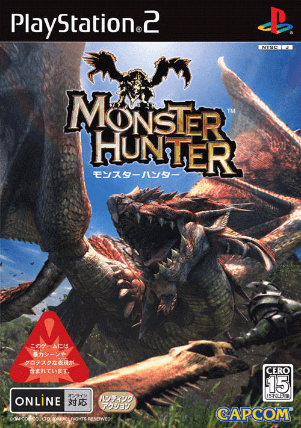
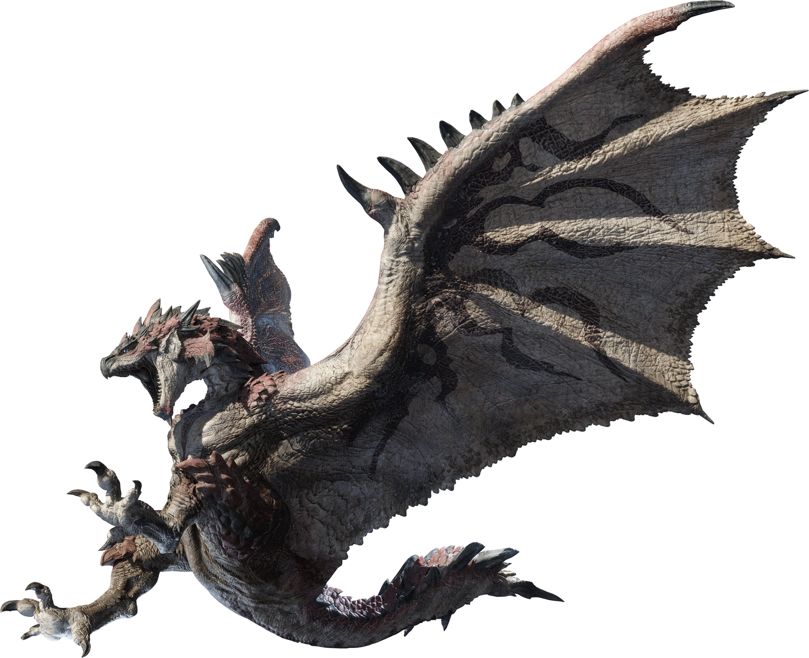
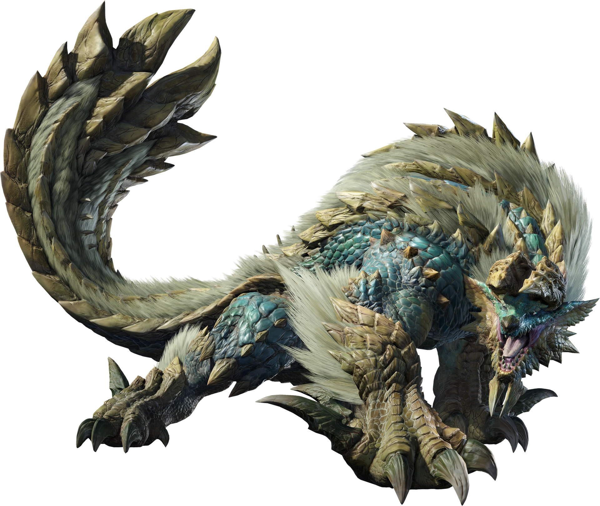
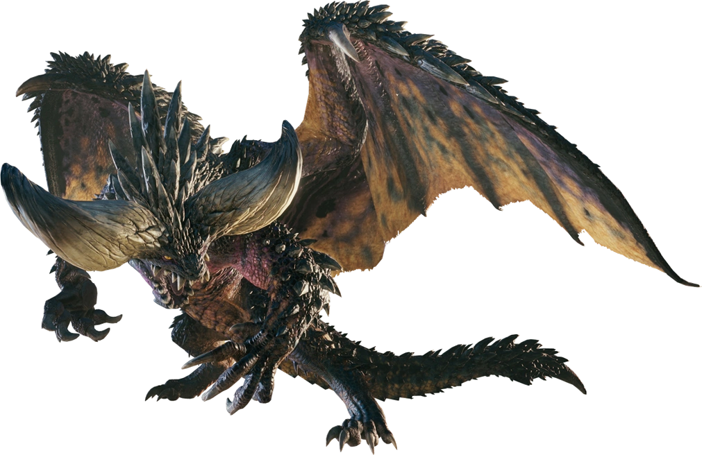
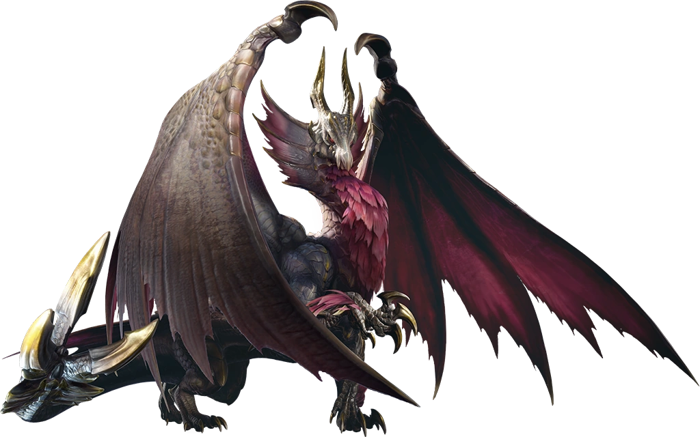
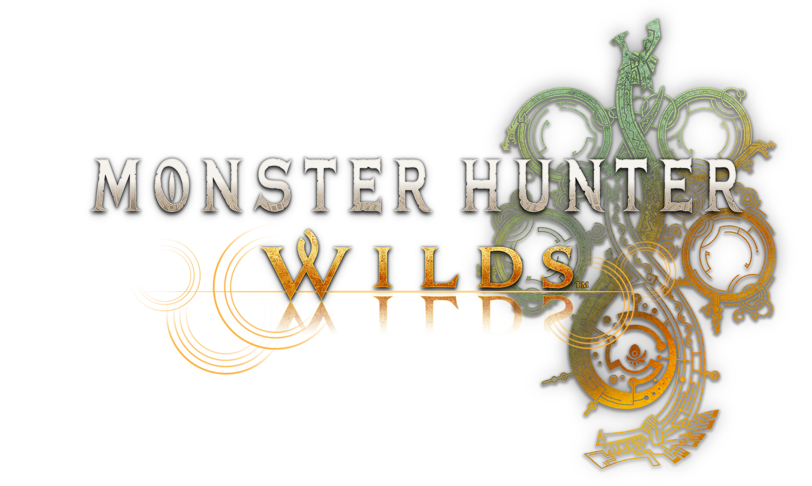
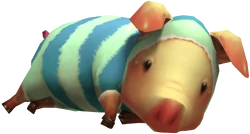

BIENVENIDO Al MUNDO DE
MONSTER HUNTER
2024 marca el 20 aniversario de Monster Hunter, una de las franquicias más populares en la actualidad del videojuego. Su estilo de juego único, que auna elementos de RPG, acción y caza de criaturas, lo han convertido en una experiencia que todo jugador que se precie debe vivir de primera mano.

El primer Monster Hunter fue lanzado en exclusiva para la consola SONY PlayStation 2, y fue la punta de lanza de los juegos multijugador en la misma. Capcom, la empresa desarrolladora, buscaba crear una nueva franquicia con un fuerte componente multijugador, enfocado particularmente al juego online.
Aunque esta primera entrega era algo tosca, ya presentaba las bondades que han encumbrado a esta franquicia de videojuegos hasta su posición actual: un esquema de juego único y adictivo consistente en cazar peligrosas criaturas y forjar equipo con sus materiales, con el fin de cazar nuevas criaturas aún más poderosas.
Monstruos

Rathalos
Wyverns terribles llamados "Reyes de los Cielos". Con ayuda de las Rathian, cercan territorios amplios centrados en sus nidos. El Rathalos desciende sobre los invasores con garras envenenadas y aliento de fuego.

Rathian
Wyverns hembras que lanzan fuego también denominadas "Reinas de la tierra". De patas poderosas y cola venenosa, suelen cazar en tierra. Las Rathian a veces cazan en pareja con un Rathalos, con los que parecen coordinar sus ataques.

Fatalis
Las leyendas sobre este dragón se remontan a la antiguedad. Mucho son los cazadores que han intentado desafiarlo, pero ninguno de ellos ha
sobrevivido. Un monstruo rodeado de misterio.

Zinogre
Wyverns de colmillos cuyos cuerpos están recubiertos de electricidad. Sus afiladas garras y fuertes patas les permiten crecer en terreno de montaña. Durante la caza, reúnen numerosos bichos eléctricos para potenciarse a sí mismos y entrar en estado de supercarga.

Nergigante
Un terrible dragón anciano que aparece cuando hay otros dragones ancianos en las cercanías. Se ha documentado ampliamente su pasión por la destrucción.

Malzeno
Un dragón cubierto de elegantes escamas plateadas. Utiliza el Qurio para drenar la energía vital de otros seres vivos, arrastrándose por la noche y atacando a sus presas por la espalda.
Novedades

Tus cacerías continúan con Monster Hunter Wilds, la entrega más nueva de la saga Monster Hunter, aún en desarrollo. Vive la experiencia más puntera de cualquier juego de cacerías de acción.
Lanzamiento previsto para 2025.
